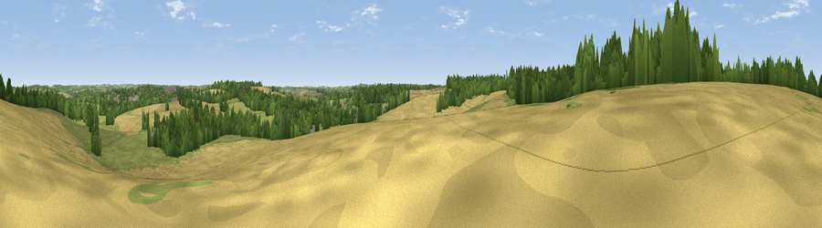

Viewpoint near Tichborne
#40525 in England · top 65% of its area beats it · near TichborneWhere it is
The exact computed spot (SU 56883 30957). Click the marker for map links.
The view, rendered

A 360° render of this exact spot computed from the terrain model, tree cover and land cover — summer colours, afternoon light, calibrated against photographs of famous viewpoints. Real trees, hedges and buildings will differ in detail.
The panorama
Grey silhouette: terrain skyline in each direction (720 bearings, Earth curvature and refraction included). Dashed green: skyline with trees (+15 m) and buildings (+8 m) as obstacles. Blue strip: how far the ground is visible on each bearing.
Where the view opens
Wedge length = distance to the farthest visible ground on that bearing (vegetation-aware). Rings at 10, 25 and 50 km.
What fills the view
48% cropland · 32% grassland · 19% woodland · 2% built-up
Angular shares of the visible panorama (visual magnitude), not map area. Landscape diversity 0.48 (0–1 Shannon).
Key numbers
More beautiful places nearby
The staircase of upgrades: each row has a higher view potential than everything closer. Driving times are estimates from straight-line distance, calibrated against real road routing — check an actual route before setting out.
| Place | Direction | Drive | Score |
|---|---|---|---|
| Viewpoint near Tichborne | NNW · 0 km | ~1 min | 25.8 |
| Viewpoint near New Alresford | NNE · 2 km | ~6 min | 32.3 |
| Gander Down | S · 4 km | ~8 min | 40.5 |
| Cheesefoot Head | SW · 5 km | ~11 min | 61.0 |
| Viewpoint near Chilcomb | WSW · 5 km | ~12 min | 63.3 |
| Beacon Hill | SSE · 9 km | ~18 min | 71.7 |
| Viewpoint near Meonstoke | SE · 13 km | ~23 min | 74.8 |
| Viewpoint near Buriton | SE · 18 km | ~31 min | 75.3 |
51.07513, -1.18943 · source: osm viewpoint · position refined by local search. Computed location — check access rights before visiting.